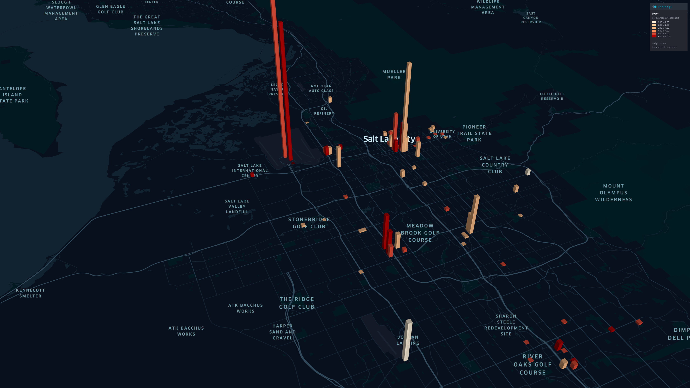

The University of Utah
#97 in National Universities
#40 in Top Public Schools
#51 in Best Engineering Schools

UofU-Traffic Lab
Our team focuses on researches including:
- Shared mobility
- Public transit
- Large-scale transportation modeling and simulation
- Geographical spatio-temporal analysis

Publications in recent five years
For a complete list of publication, please visit my  Google Scholar
Google Scholar
- Z. Yi , X. Liu, N. Markovic & J. Phillips (2021). Inferencing hourly traffic volume using data-driven machine learning and graph theory. Computers, Environment and Urban Systems. Vol. 85. Published, 01/04/2021.
- Z. Dai, X. Liu, X. Chen & X. Ma (2020). Joint optimization of scheduling and capacity for mixed traffic with autonomous and human-driven buses: A dynamic programming approach. Transportation Research Part C. Vol. 114, 598-619. Published, 03/02/2020.
- Y. Zhang, D. Lin & X. Liu (2019). Biking Islands in Cities: An Analysis Combining Bike Trajectory and Percolation Theory. Journal of Transport Geography. Vol. 80. Published, 08/20/2019.
- Z. Dai, X. Liu, Z. Chen, R. Guo & X. Ma (2019). A predictive headway-based bus-holding strategy with dynamic control point selection: A cooperative game theory approach. Transportation Research Part B: Methodological. Vol. 125, 29-51. Published, 06/01/2019.
- Z. Chen & X. Liu (2019). Validating the Adaptability of Travel Time Reliability Measurements using Probe Data. Transportation Research Record: Journal of the Transportation Research Board. Published, 03/15/2019.
- Z. Chen, X. Liu & R. Wei (2018). Agent-based Approach to Analyzing the Effects of Dynamic Ridesharing in a Multimodal Network. Computers, Environment and Urban Systems. Vol. 74, 126-135. Published, 10/09/2018.
- Z. Li, C. Chen, Q. Wu, G. Zhang, X. Liu, P. Prevedourous & D. Ma (2018). Exploring Driver Injury Severity Patterns and Causes in Low Visibility Related Single-Vehicle Crashes using a Finite Mixture Random Parameters Model. Analytic Methods in Accident Research. Vol. 20, 1-14. Published, 08/09/2018.
- Z. Li, C. Chen, Y. Ci, G. Zhang, Q. Wu, X. Liu & Z. Qian (2018). Examining Driver Injury Severity in Intersection-Related Crashes using Cluster Analysis and Hierarchical Bayesian Models. Accident Analysis and Prevention. Vol. 120, 139-151. Published, 08/06/2018.
- Z. Chen & X. Liu (2018). Roadway Asset Inspection Sampling using High-Dimensional Clustering and Locality-Sensitivity Hashing. Computer-Aided Civil & Infrastructure Engineering. Vol. 34, 116-129. Published, 07/24/2018.
- N. Haghighi, X. Liu, R. Wei, W. Li & H. Shao (2018). Using Twitter Data for Transit Performance Assessment: A Framework for Evaluating Transit Riders' Opinions about Quality of Service. Public Transport. Vol. 10, 363-377. Published, 07/02/2018.
- K. Fayyaz, X. Liu & R. Wei (2018). Transit Vehicle Performance Analysis for Service Continuity or Termination: A Data Envelopment Analysis (DEA) Approach. Transportation Research Record: Journal of Transportation Research Board. Published, 05/30/2018. https://doi.org/10.1177/0361198118772725
- N. Haghighi, K. Fayyaz, X. Liu, T. Grubesic & R. Wei (2018). A Multi-Scenario Probabilistic Simulation Approach for Critical Transportation Network Risk Assessment. Networks and Spatial Economics. Vol. 18, 181-203. Published, 03/15/2018.
- R. Wei, X. Liu, Y. Ou & K. Fayyaz (2018). Optimizing the Spatio-temporal Deployment of Battery Electric Bus System. Journal of Transport Geography. Vol. 68, 160-168. Published, 03/12/2018.
- X. Liu, J. Taylor, R. J. Porter & R. Wei (2018). Using Trajectory Data to Explore Roadway Characterization for Bikeshare Network. Journal of Intelligent Transportation Systems: Technology, Planning, and Operations. Vol. 22, 530-546. Published, 02/21/2018.
- X. Ma , S. Sun, X. Liu, C. Ding, Z. Chen & Y. Wang (2018). A Time Varying Parameters Vector Auto-Regression (TVP-VAR) Model to Disentangle the Time Varying Effects between Drivers’ Responses and Tolling on High Occupancy Toll (HOT) Facilities. Transportation Research Part C: Emerging Technologies. Vol. 88, 208-226. Published, 01/24/2018.
- C. Chen, Q. Wu, G. Zhang, X. Liu & P. Prevedouros (2018). Extracting Arterial Access Density Impacts on Safety Performance Based on Clustering and Computational Analysis. ASCE Journal of Transportation Engineering, Part A: Systems. Vol. 144(4). Published, 01/15/2018.
- N. Haghighi, X. Liu, G. Zhang & R. J. Porter (2018). Impact of Roadway Geometric Features on Crash Severity on Rural Two-Lane Highways. Accident Analysis and Prevention. Vol. 111, 34-42. Published, 01/01/2018.
- R. Wei, X. Liu, Y. Mu, L. Wang, A. Golub & S. Farber (2017). Evaluating Public Transit Services for Operational Efficiency and Access Equity. Journal of Transport Geography. Vol. 65, 70-79. Published, 10/30/2017.
- K. Fayyaz, X. Liu & G. Zhang (2017). An Efficient General Transit Feed Specification (GTFS) Enabled Algorithm for Dynamic Transit Accessibility Analysis. PLoS ONE. Vol. 12, e0185333. Published, 10/02/2017.
- X. Liu and Z. Chen. Spatial Sampling with Fisher Information for Optimal Maintenance Management and Quality Assurance. Journal of Transportation Engineering, Part A: Systems. Vol 143, Issue 10. 2017. Published, 08/02/2017.
- K. Fayyaz, X. Liu and R. Porter. Dynamic Transit Accessibility and Transit Gap Causality Analysis. Journal of Transport Geography. Vol 59, pp 27-39, 2017. Published, 01/17/2017.
- C. Chen, G. Zhang, X. Liu, Y. Ci, H. Huang, J. Ma, Y. Chen, H. Guan. Driver Injury Severity Outcome Analysis in Rural Interstate Highway Crashes: a Two-Level Bayesian Logistic Regression Interpretation. Accident Analysis and Prevention. Vol 97, pp 69-78, 2016. Published, 12/01/2016.
- Z. Chen, X. Liu, and G. Zhang. Non-recurrent Congestion Analysis using Data-driven Spatiotemporal Approach for Information Construction. Transportation Research Part C: Emerging Technologies. Vol 71, pp 19-31, 2016. Published, 07/12/2016.
- K. Fayyaz, X. Liu & R. J. Porter (2016). A Genetic-Algorithm and Regression-Based Model for Analyzing Fare Payment Structure and Transit Dwell Time. Transportation Research Record: Journal of Transportation Research Board. Vol. 2595, 1-10. Published, 05/10/2016.
- Q. Wu, G. Zhang, X. Zhu, X. Liu, R. Tarefder. Analysis of driver injury severity in single-vehicle crashes on rural and urban roadways. Accident Analysis and Prevention. Vol 94, pp 35-45, 2016. Published, 02/08/2016.
- G. Xu, X. Liu, S. An, Y. Wang, and Y. Lao. Enabling Network-wide Tolling Strategy Assessment via Customized Route Choice Simulation Module. ASCE Journal of Transportation Engineering. Issue 2, Vol 142. 2015. Published, 01/05/2016.